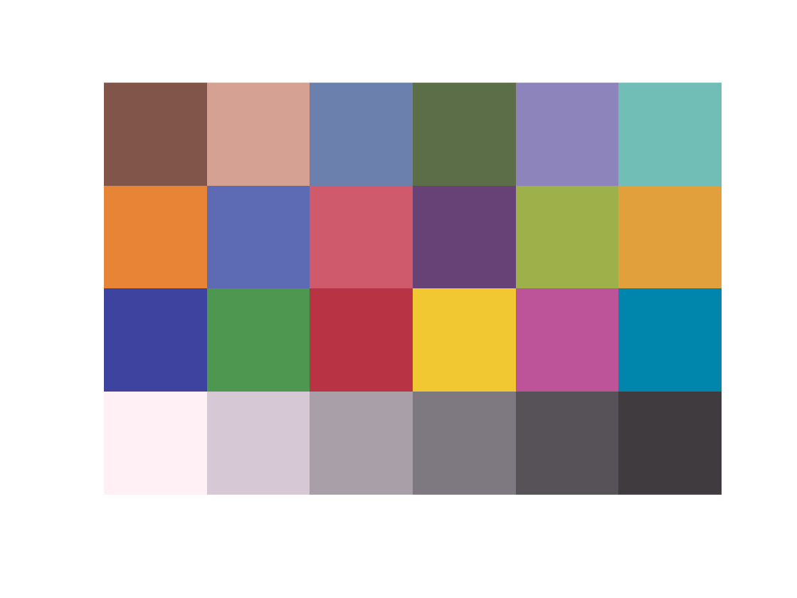

t_sceneFromSurface
Show how to create a scene from scratch, starting with surface reflectances and an illuminant.
Copyright ImagEval Consultants, LLC, 2016.
Contents
- Init
- Define wavelength spacing we will use
- Read in a file with reflectances
- Read in a D65 spectrum
- Create an empty scene
- Compute the radiance under the specified illuminant
- Put in the photons and the illuminant
- Look at the image contained in our beautiful scene
- Check that isetbio agrees about the reflectance
Init
ieInit;
Define wavelength spacing we will use
Wavelength in nm
dwave = 10; wave = 400:dwave:700;
Read in a file with reflectances
This could be anything, but here we load in the Macbeth Color Checker Chart and expand it out so we can see it.
Make this an m x n x nwave matrix and look at it to make sure we didn't muck it up.
Routine imageSPD is a utility that will render spectral data and show it as an image in a new window.
patchSize = 12; macbethReflectance = macbethReadReflectance(wave); macbethReflectance = reshape(macbethReflectance',4,6,31); macbethReflectance = imageIncreaseImageRGBSize(macbethReflectance,patchSize); nRows = size(macbethReflectance,1); nCols = size(macbethReflectance,2); imageSPD(macbethReflectance);
Read in a D65 spectrum
Scale it so that it luminance is 100 cd/m2. The leading constant of 683 puts us in cd/m2 for energy radiance in Watts/[m2-sr-nm]
XYZ = 683*ieReadSpectra('XYZ',wave); illuminantTmp = ieReadSpectra('D65',wave); illuminanLuminance = XYZ(:,2)'*illuminantTmp*dwave; theIlluminant = 100*illuminantTmp/illuminanLuminance; fprintf('Luminance of illuminant is %0.1f cd/m2\n',XYZ(:,2)'*theIlluminant*dwave);
Luminance of illuminant is 100.0 cd/m2
Create an empty scene
scene = sceneCreate('empty');
Compute the radiance under the specified illuminant
for i = 1:nRows for j = 1:nCols radianceEnergy(i,j,:) = theIlluminant.*squeeze(macbethReflectance(i,j,:)); end end radiancePhotons = Energy2Quanta(wave,radianceEnergy);
Put in the photons and the illuminant
This now makes the implied surface reflectance what we started with, as we check a little further down.
scene = sceneSet(scene,'photons',radiancePhotons); scene = sceneSet(scene,'illuminant energy',theIlluminant);
Look at the image contained in our beautiful scene
This will replace what was in the first figure we had and should look the same.
sceneShowImage(scene);
Check that isetbio agrees about the reflectance
sceneReflectance = sceneGet(scene,'reflectance'); sceneIlluminant = sceneGet(scene,'illuminant energy'); diffReflectance = max(abs(sceneReflectance(:)-macbethReflectance(:))); diffIlluminant = max(abs(sceneIlluminant(:)-theIlluminant(:))); if (diffReflectance < 1e-6) fprintf('Reflectance matches what we set!\n'); else fprintf('Sigh. There is a reflectance set bug.\n'); end if (diffIlluminant < 1e-6) fprintf('Illuminant matches what we set!\n'); else fprintf('Sigh. There is an illuminant set bug.\n'); end
Reflectance matches what we set! Illuminant matches what we set!